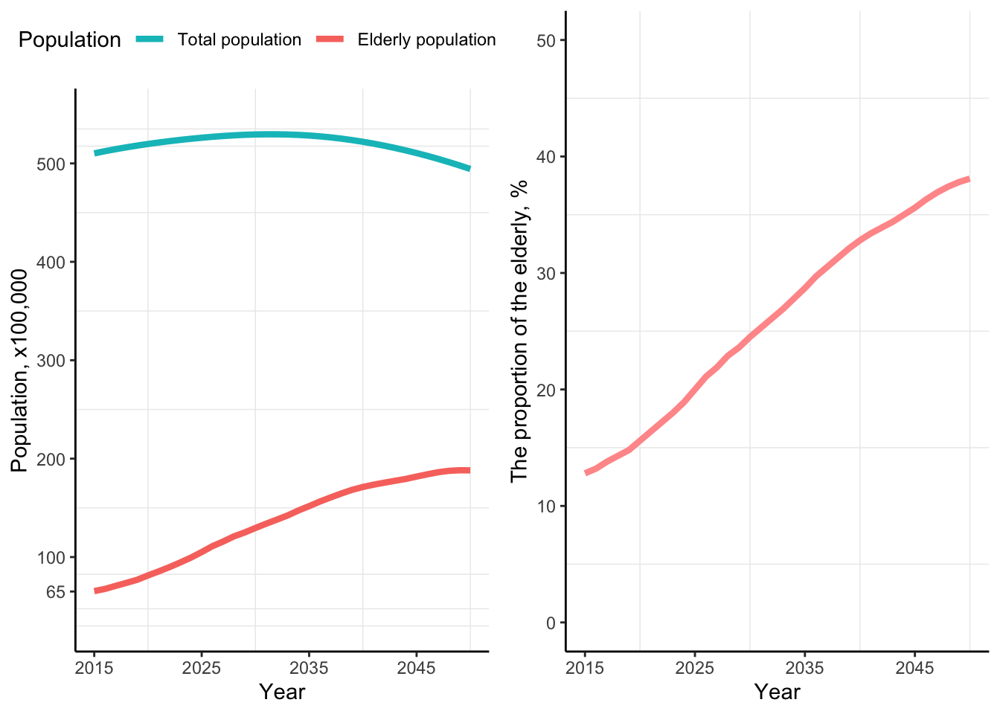

Chapter 6 Survey
6.1 Demographics
The number of respondent: 2497
| DQ1_Sepcialty | |
|---|---|
| X | CS : 85 |
| X.1 | GS :497 |
| X.2 | Multi: 19 |
| X.3 | NU :296 |
| X.4 | PED :835 |
| X.5 | PSY :765 |
ggplot(db_nu, aes(x = DQ1_1_ReperfusionTx)) +
geom_bar(aes(fill = DQ1_1_ReperfusionTx)) +
scale_x_discrete(limits = c("Reperfusion Tx (+)", "Reperfusion Tx (-)"))
##
## CS GS Multi NU PED PSY
## 1 0 1 1 0 15 10
## 2 0 2 0 5 14 17
## 3 0 1 1 11 21 16
## 4 1 0 2 12 26 196.2 A. Work hours
db %>% group_by(DQ1_Sepcialty) %>%
summarise(meanworkhour = mean(A1_1_worktime_weekday, na.rm = T),
maxworkhour = max(A1_1_worktime_weekday, na.rm = T),
minworkhour = min(A1_1_worktime_weekday, na.rm = T))## # A tibble: 6 x 4
## DQ1_Sepcialty meanworkhour maxworkhour minworkhour
## <fct> <dbl> <dbl> <dbl>
## 1 CS 10.9 18 6
## 2 GS 10.4 24 4
## 3 Multi 8.55 12 5
## 4 NU 10.7 18 5
## 5 PED 8.92 24 2
## 6 PSY 8.57 40 3ggplot(db, aes(x = DQ1_Sepcialty, y = A1_1_worktime_weekday)) +
geom_boxplot(aes(fill = DQ1_Sepcialty), alpha = 0.1) +
geom_jitter(aes(color = DQ1_Sepcialty, alpha = 0.1)) +
scale_x_discrete(limits = c("PED", "GS", "PSY", "CS", "NU", "Multi"))db %>% group_by(DQ1_Sepcialty) %>%
summarise(meanworkhour = mean(A1_2_worktime_saturday, na.rm = T),
maxworkhour = max(A1_2_worktime_saturday, na.rm = T),
minworkhour = min(A1_2_worktime_saturday, na.rm = T))## # A tibble: 6 x 4
## DQ1_Sepcialty meanworkhour maxworkhour minworkhour
## <fct> <dbl> <dbl> <dbl>
## 1 CS 4.94 24 1
## 2 GS 4.52 24 1
## 3 Multi 4.71 12 1
## 4 NU 4.86 24 1
## 5 PED 5.18 24 1
## 6 PSY 4.43 24 0ggplot(db, aes(x = DQ1_Sepcialty, y = A1_2_worktime_saturday)) +
geom_boxplot(aes(fill = DQ1_Sepcialty), alpha = 0.1) +
geom_jitter(aes(color = DQ1_Sepcialty, alpha = 0.1)) +
scale_x_discrete(limits = c("PED", "GS", "PSY", "CS", "NU", "Multi"))db %>% group_by(DQ1_Sepcialty) %>%
summarise(meanworkhour = mean(A1_3_worktime_sunday, na.rm = T),
maxworkhour = max(A1_3_worktime_sunday, na.rm = T),
minworkhour = min(A1_3_worktime_sunday, na.rm = T))## # A tibble: 6 x 4
## DQ1_Sepcialty meanworkhour maxworkhour minworkhour
## <fct> <dbl> <dbl> <dbl>
## 1 CS 5.67 24 1
## 2 GS 4.54 24 1
## 3 Multi 7.33 12 4
## 4 NU 5.52 24 1
## 5 PED 5.95 24 1
## 6 PSY 2.74 24 0ggplot(db, aes(x = DQ1_Sepcialty, y = A1_3_worktime_sunday)) +
geom_boxplot(aes(fill = DQ1_Sepcialty), alpha = 0.1) +
geom_jitter(aes(color = DQ1_Sepcialty, alpha = 0.1)) +
scale_x_discrete(limits = c("PED", "GS", "PSY", "CS", "NU", "Multi"))db %>% group_by(DQ1_Sepcialty) %>%
summarise(meanworkhour = mean(A2_meanworkhourperweek, na.rm = T),
maxworkhour = max(A2_meanworkhourperweek, na.rm = T),
minworkhour = min(A2_meanworkhourperweek, na.rm = T))## # A tibble: 6 x 4
## DQ1_Sepcialty meanworkhour maxworkhour minworkhour
## <fct> <dbl> <dbl> <dbl>
## 1 CS 63.7 110 8
## 2 GS 56.8 200 6
## 3 Multi 48.4 80 22
## 4 NU 58.5 114 7
## 5 PED 48.7 168 0
## 6 PSY 44.3 100 5